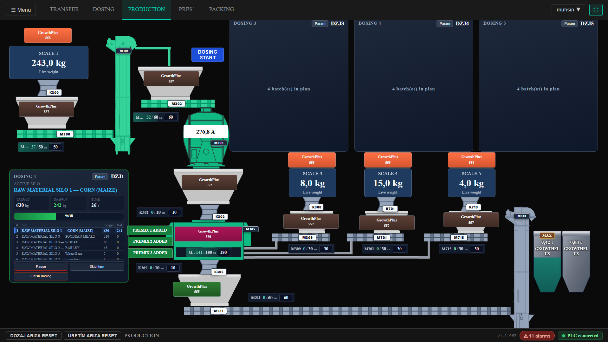
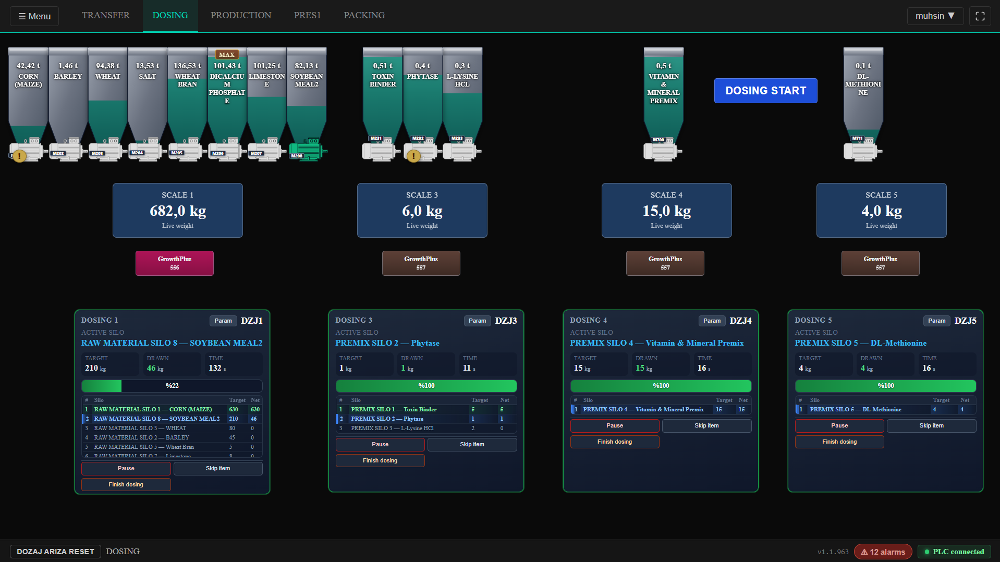
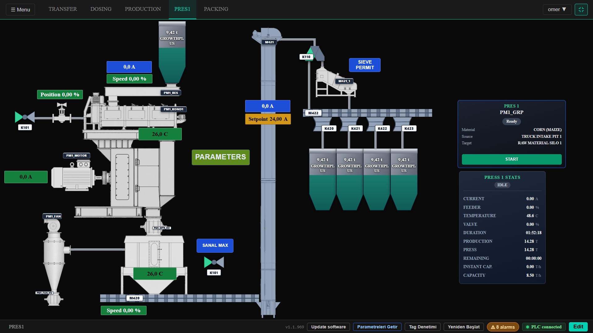
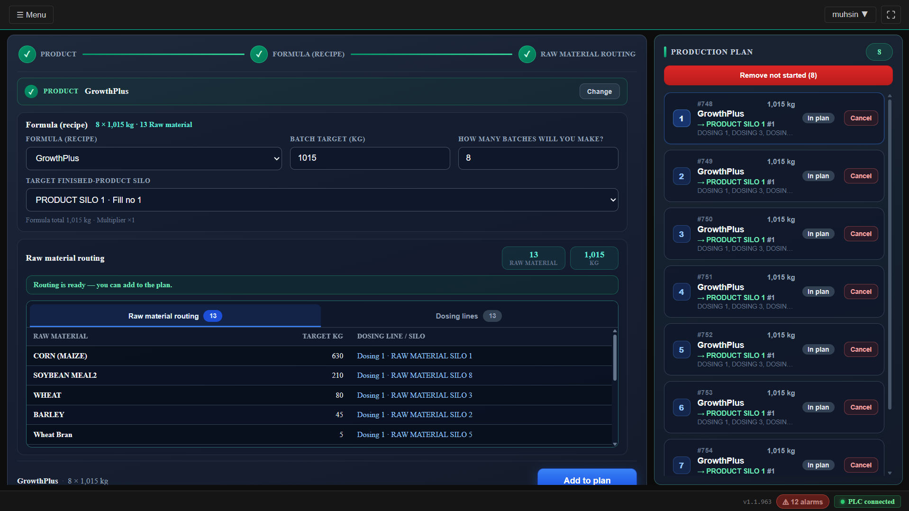
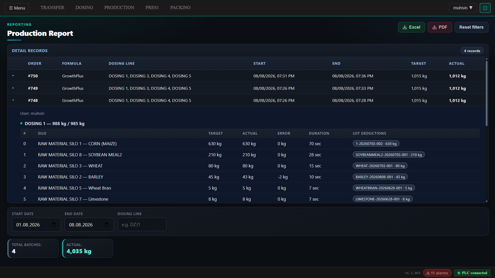
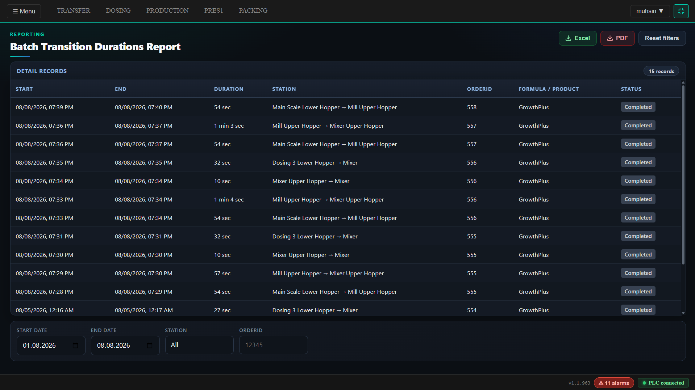
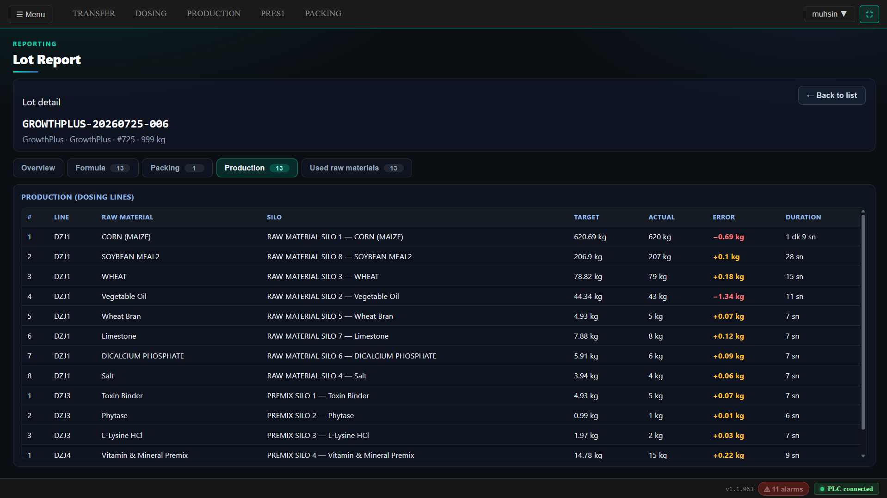
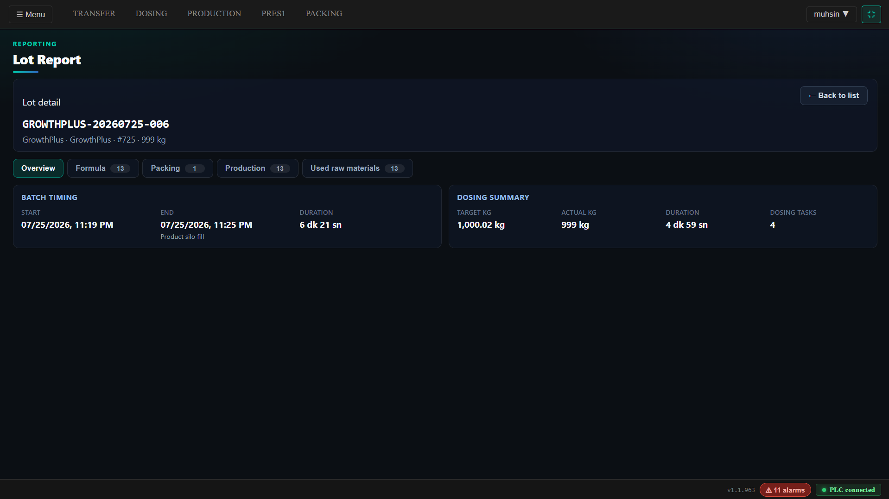
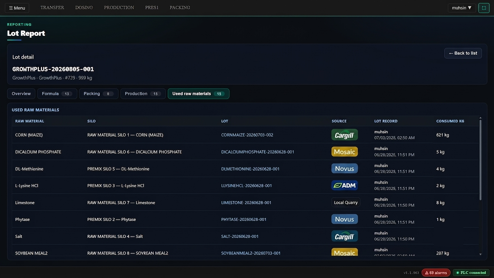
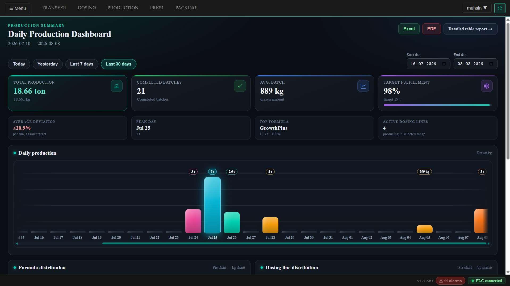

Üretiminizi yönetin, darboğazlarınızı görün, sisteminizi ihtiyaçlarınıza göre hızla geliştirin.
İyi bir SCADA ekranı yapmak yeterli değil. Değer; hız, destek, sürekli gelişim ve üretim analizinde.

Değer, ekranın arkasındaki sistemde ve sistemin arkasındaki ekipte.
İhtiyaca cevap verme hızı — scan time değil.
Bir sorun olduğunda ulaşabileceğiniz ekip.
Sistem fabrikanızla birlikte gelişir.
Ezber değil; doğru bilgi doğru yerde.
Süre verilerinden verimsizliği tespit edin.
Bugün yok, yarın lazım olan özellik eklenebilir.
Lot izlenebilirliği, SCADA, dozaj ve raporlar — bu vaadi kanıtlayan ürün özellikleri.
Siparişten üretime, hammaddeden paketlemeye — operasyonu tek platformda yönetin. Sadece makine ekranı değil; planlama, stok, izlenebilirlik ve analiz birlikte.
ERP’nin kendisini satmıyoruz — üretim ile ERP arasında veri akışı kurulabilir.
* Sevkiyat: paketleme sonuçlarının ERP / irsaliye tarafına bağlanması — ayrı WMS modülü iddiası değil.
Hammadde lotu → üretim lotu → paketleme · Üretimi sadece izlemeyin; nerede zaman kaybettiğinizi görün.
Kalite = reçete, gerçek dozaj, sapma, lot — laboratuvar / LIMS iddiası yok.
Platformun arkasındaki hizmet — üretim akışının içinde değil.
Hat, dozaj ve ekipman durumu aynı yüzeyde. Bu bir başlangıç — ürünün tamamı değil.
Kazanç: Operatör hattı tek bakışta görür; yönetim canlı durumu takip eder.
Fabrika otomasyonunda sorun mesai saatinde çıkmaz.
İhtiyaç duyduğunuzda ulaşabileceğiniz teknik ekip. Kurulum sonrası 7/24 teknik destek.
Fabrikanızın ihtiyaçları zamanla değişir. Sisteminiz de değişebilmelidir.
Bugün ihtiyacınız olmayan bir özellik, yarın fabrikanız için gerekli olabilir.
Buradaki hız PLC scan time veya ekran açılış süresi değil. Yeni ihtiyaç → hızlı geliştirme → hızlı devreye alma.
Bir dozaj ünitesinin sisteme eklenmesi gibi geliştirmeler, günler süren projeler yerine uygun koşullarda saatler içerisinde tamamlanabilir.
Her geliştirme aynı sürede bitmez; kapsam projeye göre değişir.
“Güzel tasarım” değil — operatörün işi. İhtiyaç duyulan bilgi doğru yerde, doğru zamanda.

Kazanç: Operatörler bunu rahat kullanabilir.
Çalışıyor / duruyor / arıza — tek bakışta.
Parti ve dozaj özeti ekranda.
Menü labirenti yerine doğru yüzey.
Start, duraklat, satır atla — net aksiyonlar.
İyi bir otomasyon sistemi sadece bilgi vermez; yanlış işlem ihtimalini de azaltmaya yardımcı olur.
“Hata sıfırlanır” iddiası yoktur — mevcut kontrollerle risk azaltılır.
ÜRETİM Net durumlar, alarm ve müdahale noktaları

PRES Aynı mantık: açık ekipman durumu, anlaşılır kontrol
Herkes her işlemi yapamaz — operatör / otomasyon / yönetici.
Ekipmanda M/A durumu görünür; karışıklık azalır.
Aktif alarmlar görünür; sessizce kaybolmaz.
Kritik müdahaleler kullanıcıyla kayda geçer — “kim ne yaptı?”
Üretimde ne olduğunu sonradan tahmin etmeyin. Analiz bir sonraki adımda.

Kazanç: Vardiya başlamadan ürün, formül, batch hedefi ve silo / stok rotası netleşir.

Kazanç: Hedef–gerçekleşen, süre, kullanıcı; Excel / PDF.
Canlı SCADA yukarıda · Dashboard aşağıda · Lot tekrarı yok
Üretim verilerini sadece raporlamakla kalmayın. Süreleri karşılaştırarak darboğazları ve verimsizlikleri görün.
Otomatik yapay zeka iddiası yok — süre kayıtları üzerinden analiz edersiniz.
Tek bir anormal süre, hattın gerçek darboğazını ortaya çıkarabilir.
Örnek gösterim — gerçek süreler istasyon / parti kayıtlarından gelir.

Kazanç: Parti geçiş ve istasyon sürelerini rakamla karşılaştırın.
Takip edilebilen süreler (sistem kayıtları üzerinden):
• Parti geçiş süreleri
• Üretim / istasyon süreleri
• Pres ve paketleme süreleri
• Ekipman çalışma süreleri
Laboratuvar kalite yönetim sistemi iddiası yok. Amaç: üretim verisinin izlenebilirlik ve kalite sorularına cevap vermesi.
Bir ürünün sadece sonucunu değil, üretim geçmişini de görün.

Kazanç: Kalite veya izlenebilirlik sorusunda üretim geçmişine dönün.
Güçlü bir ürün özelliği — şirketin tamamı değil. Bir ürünün geçmişini saniyeler içinde bulun.


Kazanç: Geri çağırma ve şikayet sorularına hızlı cevap.
Günlük tonaj, batch, hedef gerçekleşme — yönetici özeti.

Kazanç: Ofisten fabrika gününü tek bakışta okuyun.
Sisteminiz bugünkü fabrikanıza değil, fabrikanızın gelişimine hazır olmalı.
Ana farklılaştırıcı değil. Kapsam’daki üst katman: sipariş / planlama → üretim → paketleme sonuçları ERP’ye dönebilir. ERP entegrasyonuna hazır altyapı.
Hazır plug-and-play connector iddiası yoktur. ERP’nin kendisini satmıyoruz.
Mevcut otomasyonunuzu inceleyelim. Hangi verileri görünür hale getirebileceğimizi ve hangi ihtiyaçlara hızlı cevap verebileceğimizi birlikte değerlendirelim.
Kurulumla işimiz bitmiyor. Sistemi kurup sizi yalnız bırakmıyoruz.
Yeni dozaj / ekran / rapor ihtiyaçlarını konuşalım.
Süre verilerinizle kayıpları birlikte okuyalım.
Operatörün rahat kullanacağı yüzeyi gösterelim.
İletişim
[Adınız]
[eposta@firma.com]